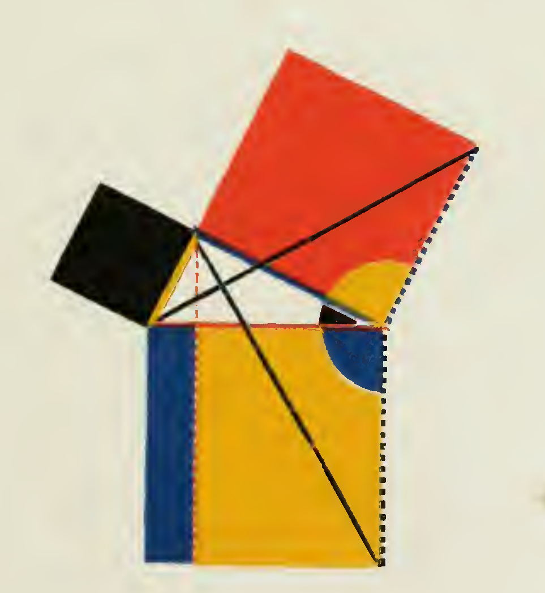

Title Page & Dedication¶
Half-Title, Polychrome Title Page & Dedication to Earl Fitzwilliam (Leaves 5–9)
f. 0005 · pp. half-titleHalf-Title (Leaf 5): BYRNE’S EUCLID. THE FIRST SIX BOOKS OF THE ELEMENTS OF EUCLID, IN WHICH COLOURED DIAGRAMS AND SYMBOLS ARE USED INSTEAD OF LETTERS FOR THE GREATER EASE OF LEARNERS.
Title Page (Leaf 7): Printed by Charles Whittingham at the Chiswick Press for William Pickering, London, 1847, emblazoned with Byrne’s signature four-color Pythagorean Windmill theorem emblem.


Dedication (Leaf 9): “To the Right Honorable Charles William, Earl Fitzwilliam… This Work is Respectfully Inscribed by His Lordship’s Obliged and Grateful Servant, Oliver Byrne.”
See Commentary.